파이썬의 응용
이 장을 마치면
- 지금까지 배운 개념을 종합하여 실용 프로그램을 설계할 수 있다.
- JSON 파일로 데이터를 영구 저장·복원할 수 있다.
- 클래스 기반으로 데이터와 동작을 하나의 단위로 묶을 수 있다.
- 단어장, 데이터 정리, 시각화, 웹 앱 등 다양한 응용 사례를 실습할 수 있다.
- 요구사항 분석부터 통합까지의 설계 과정을 경험할 수 있다.
지금까지 우리는 변수와 자료형, 조건문과 반복문, 함수, 리스트와 딕셔너리, 파일 입출력, 그리고 클래스까지 파이썬의 핵심 개념을 단계적으로 배워 왔다. 이번 장에서는 그동안 배운 모든 지식을 종합하여 실제로 쓸 수 있는 프로그램을 직접 만들어 본다.
프로그래밍을 배우는 것과 프로그램을 만드는 것은 다르다. 문법을 아는 것만으로는 프로그램을 완성할 수 없다. 실제 프로그램을 만들려면 "무엇을 만들 것인가"(요구사항 분석), "어떤 데이터를 어떻게 저장할 것인가"(자료구조 설계), "어떤 기능을 어떤 함수로 나눌 것인가"(함수 분리), 그리고 "이 기능들을 어떻게 연결할 것인가"(통합)의 과정을 거쳐야 한다. 이 장에서는 네 개의 프로젝트를 통해 이러한 설계 과정을 체계적으로 경험한다.
첫 번째 프로젝트인 단어장 앱에서는 딕셔너리와 JSON 파일 입출력을 활용한다. 두 번째 비정형 데이터 정리에서는 형식이 제각각인 텍스트 파일을 문자열 메소드로 파싱하여 깔끔한 CSV로 변환한다. 세 번째 프랙탈 그리기에서는 재귀 함수와 turtle 그래픽을 활용하여 자기 닮은 나무와 코흐 눈송이를 짧은 코드로 그려 본다. 네 번째 웹 앱에서는 Flask 웹 프레임워크를 이용하여 브라우저에서 동작하는 할 일 관리 앱을 만든다.
각 프로젝트는 점차 난이도가 높아지며, 완성된 프로그램을 직접 실행해 보면서 실전 프로그래밍 능력을 기르자.
10.1 나만의 단어장 앱
첫 번째 프로젝트로 영어 단어와 뜻을 등록하고, 조회하고, 퀴즈를 풀 수 있는 콘솔 기반 단어장 앱을 만들어 보자. 이 프로젝트에서는 딕셔너리, 파일 입출력, 반복문, 함수를 종합적으로 활용한다. 단어장 앱은 구조가 비교적 단순하면서도 데이터 저장, 검색, 무작위 출제 등 다양한 기능을 포함하고 있어 첫 프로젝트로 적합하다.
요구사항 분석과 설계
프로그램을 만들기 전에 먼저 "이 프로그램이 무엇을 해야 하는가"를 명확히 정의해야 한다. 단어장 앱의 주요 기능을 요구사항으로 정리하면 다음과 같다.
- 단어 추가: 사용자가 영어 단어와 한글 뜻을 입력하면 저장한다.
- 단어 목록 보기: 등록된 모든 단어를 출력한다.
- 단어 검색: 특정 단어의 뜻을 조회한다.
- 퀴즈 모드: 무작위로 단어를 출제하여 뜻을 맞추는 게임을 한다.
- 파일 저장/불러오기: 프로그램을 종료했다가 다시 실행해도 단어가 유지된다.
자료구조 선택
요구사항을 분석하면 "영어 단어"를 키로, "한글 뜻"을 값으로 하는 1대1 매핑이 필요하다는 것을 알 수 있다.
이는 파이썬의 딕셔너리가 가장 적합한 자료구조이다.
딕셔너리는 키를 기반으로 검색하는 속도가 매우 빠르며(O(1)), 중복 키를 허용하지 않으므로 같은 단어가 두 번 등록되는 것을 자연스럽게 방지할 수 있다.
클래스 설계
하나의 거대한 코드 블록으로 프로그램을 작성하는 것은 좋지 않다. 9장에서 배운 클래스를 활용하면 관련된 데이터와 동작을 하나의 단위로 묶어 응집도 높은 구조를 만들 수 있다. 이 프로그램은 단어 데이터(딕셔너리)와 그 데이터를 다루는 동작(추가·검색·퀴즈·저장·불러오기)이 한 쌍을 이루므로 클래스로 설계하기에 매우 적합하다.
WordApp 클래스를 정의하고 다음과 같은 메소드를 내부에 둔다.
__init__(filename): 생성자. 파일명을 속성으로 저장하고load()를 호출하여 단어 딕셔너리를 초기화한다.load(): JSON 파일에서 단어 데이터를 읽어 속성self.words에 저장한다.save():self.words를 JSON 파일로 저장한다.add(): 새 단어를 추가한다.show(): 전체 단어 목록을 출력한다.search(): 특정 단어를 검색한다.quiz(): 무작위로 문제를 출제한다.run(): 메뉴를 반복 출력하며 사용자 입력에 따라 해당 메소드를 호출하는 메인 루프.
그림 10.1은 WordApp 클래스의 구조를 보여 준다.
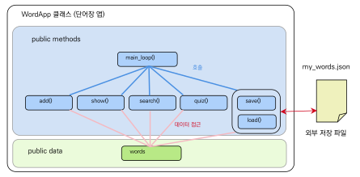
그림 10.1에서 보듯이, WordApp 클래스는 단어 데이터(self.words)를 속성으로 보유하고, 이 데이터를 다루는 메소드들을 함께 가진다. 메소드들은 self.words를 통해 같은 데이터에 접근하므로 함수마다 words 인자를 전달할 필요가 없다. 데이터는 JSON 파일로 영구 보관된다.
전체 코드
설계를 바탕으로 작성한 전체 코드는 다음과 같다.
import json
import random
from pathlib import Path
class WordApp:
"""A simple vocabulary application."""
def __init__(self, filename='my_words.json'):
self.filename = Path(filename)
self.words = {}
self.load()
def load(self):
"""Load vocabulary from file into self.words."""
if self.filename.exists():
with self.filename.open('r', encoding='utf-8') as f:
self.words = json.load(f)
else:
self.words = {}
def save(self):
"""Save self.words to the file."""
with self.filename.open('w', encoding='utf-8') as f:
json.dump(self.words, f, ensure_ascii=False, indent=2)
def add(self):
"""Add a new word."""
eng = input('English word : ').strip().lower()
if eng in self.words:
print(f' "{eng}" is already registered.')
return
meaning = input('Meaning : ').strip()
self.words[eng] = meaning
print(f' "{eng}: {meaning}" added!')
def show(self):
"""Display all words."""
if not self.words:
print(' No words registered.')
return
print(f' --- Total {len(self.words)} words ---')
for eng, meaning in self.words.items():
print(f' {eng:20s} : {meaning}')
def search(self):
"""Search for a word."""
eng = input('Word to search : ').strip().lower()
if eng in self.words:
print(f' {eng} : {self.words[eng]}')
else:
print(f' "{eng}" not found.')
def quiz(self):
"""Quiz mode: randomly ask up to 5 questions."""
if len(self.words) < 2:
print(' Need at least 2 words for a quiz.')
return
items = list(self.words.items())
random.shuffle(items)
count = min(5, len(items))
score = 0
print(f'\n === Quiz Start ({count} questions) ===')
for i, (eng, meaning) in enumerate(items[:count], 1):
answer = input(f' Q{i}. What does "{eng}" mean? ')
if answer.strip() == meaning:
print(' Correct!')
score += 1
else:
print(f' Wrong! The answer is "{meaning}".')
print(f'\n Result: {score} out of {count} correct')
def run(self):
"""Main menu loop."""
print('=== My Vocabulary App ===')
while True:
print('\n1.Add 2.List 3.Search 4.Quiz 5.Save 6.Quit')
choice = input('Choice : ').strip()
if choice == '1':
self.add()
elif choice == '2':
self.show()
elif choice == '3':
self.search()
elif choice == '4':
self.quiz()
elif choice == '5':
self.save()
print(' Saved!')
elif choice == '6':
self.save()
print(' Vocabulary saved. Goodbye!')
break
else:
print(' Invalid input.')
if __name__ == '__main__':
app = WordApp()
app.run()지금부터 앞에서 살펴본 코드의 중요한 부분을 하나씩 짚어 보자. 프로그램이 어떻게 데이터를 영구 저장하고, 단어를 추가·검색하며, 퀴즈를 출제하고, 사용자 입력을 반복 처리하는지 그 흐름을 차근차근 따라가 보자.
생성자와 데이터 저장·불러오기
__init__() 생성자는 파일명을 self.filename 속성으로 저장하고, 곧바로 self.load()를 호출하여 단어 딕셔너리를 속성 self.words에 초기화한다. 이렇게 하면 인스턴스가 만들어지는 즉시 사용할 준비가 완료된다.
load() 메소드는 JSON 파일이 존재하면 json.load()로 파일 내용을 읽어 self.words에 대입한다. 파일이 없으면 빈 딕셔너리를 대입하여 새로운 단어장을 시작한다. save() 메소드는 반대로 self.words의 내용을 JSON 파일로 저장한다.
json.dump() 함수의 ensure_ascii=\allowbreak False 옵션은 한글이 유니코드 이스케이프 문자가 아닌 읽을 수 있는 한글 그대로 저장되도록 하며, indent=2는 들여쓰기를 적용하여 파일의 가독성을 높인다.
단어 추가와 검색
add() 메소드는 input()으로 영어 단어를 입력받은 뒤, in 연산자로 self.words에 이미 존재하는지 확인한다.
이때 strip()은 앞뒤 공백을 제거하고, lower()는 대소문자를 통일하여 "Apple"과 "apple"이 같은 단어로 처리되도록 만든다. 단어 인자를 함수 인자로 받지 않고 속성 self.words를 직접 수정한다는 점에 주목하자 — 이것이 객체지향 방식의 핵심 장점이다.
퀴즈 모드
quiz() 메소드는 먼저 self.words가 2개 이상인지 확인한 뒤 random.shuffle()로 단어 목록을 무작위로 섞는다.
min(5, len(items))을 사용하여 단어가 5개 미만일 때는 있는 단어만큼만 출제하며, enumerate(items[:count], 1)로 1번부터 시작하는 문제 번호를 부여한다.
메인 루프와 실행
run() 메소드는 while True 무한 루프로 메뉴를 반복 출력하다가 사용자가 "6"을 입력하면 데이터를 저장한 뒤 break로 루프를 탈출한다.
이 패턴은 메뉴 기반 콘솔 프로그램에서 가장 흔히 사용되는 구조이다.
프로그램 실행은 스크립트 진입점에서 app = WordApp()으로 인스턴스를 만들고 app.run()을 호출하는 두 줄이면 충분하다. 같은 클래스로 파일명이 다른 두 개의 단어장(예: 영어용·일본어용)을 동시에 운영하는 것도 WordApp('eng.json')과 WordApp('jpn.json')처럼 여러 인스턴스를 만드는 것만으로 가능하다. 단어를 두 개 등록한 뒤 퀴즈와 저장까지 한 번에 실행해 본 모습이 그림 10.2에 정리되어 있다.
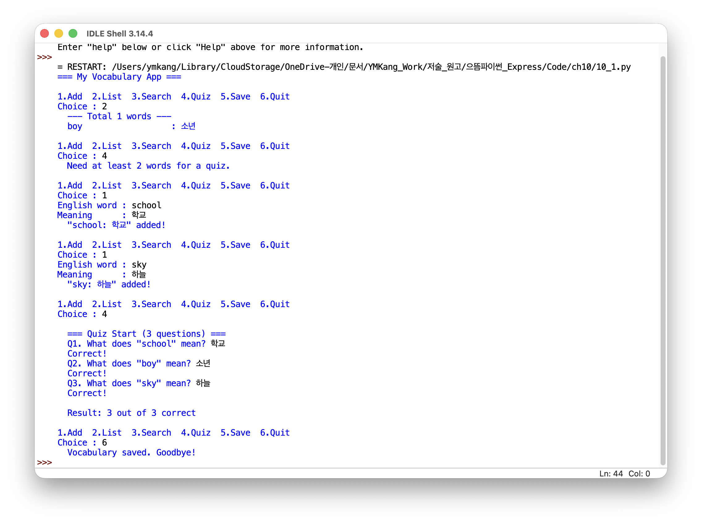
그림 10.2에서 메뉴를 따라 단어를 추가하고, 목록을 보고, 퀴즈를 풀고, 마지막에 저장하면서 종료하는 전체 흐름을 한 화면에서 확인할 수 있다. 같은 메뉴 패턴이 곧이어 다른 프로젝트에서도 그대로 재사용된다는 점에 주목하자.
이 프로젝트에서 활용한 핵심 개념:
- 클래스와 객체 — 데이터(
self.words)와 동작(메소드)을 한 단위로 묶어 응집도 있는 설계 - 딕셔너리 — 영어 단어(키)와 뜻(값)의 쌍을 저장하는 가장 적합한 자료구조
- JSON 파일 입출력 —
json.dump()와json.load()로 프로그램 종료 후에도 데이터를 유지 - 생성자와 속성 —
__init__()에서 상태를 초기화하고 모든 메소드가 공유 - 메인 루프 패턴 —
while True와 메뉴 분기로 사용자 입력을 반복 처리
10.2 비정형 데이터 정리 자동화
두 번째 프로젝트로 형식이 들쭉날쭉한 텍스트 파일을 읽어서 깔끔한 CSV 파일로 변환하는 프로그램을 만들어 보자. 현실의 데이터는 교과서처럼 정돈되어 있지 않다. 사람이 손으로 입력한 연락처, 로그 파일, 설문 응답 등은 구분자가 제각각이고, 빈 칸이나 오탈자도 섞여 있다. 이런 "지저분한" 데이터를 프로그램이 처리할 수 있는 형태로 정리하는 작업을 데이터 전처리data wrangling라 하며, 실무 프로그래밍에서 가장 빈번하게 만나는 작업 중 하나이다.
이 프로젝트에서는 문자열 메소드, 파일 입출력, csv 모듈, 예외 처리를 종합적으로 활용한다.
비정형 데이터의 예시
다음은 동아리 회원 명부를 여러 사람이 자유 형식으로 입력한 텍스트 파일이다. 구분자, 전화번호 형식, 공백 처리가 모두 제각각이다.
# members_raw.txt Hong Gildong / 010-1234-5678 / hong@email.com / Seoul Kim Yusin 010.9876.5432 kim_ys@company.co.kr Busan Lee Sunsin, 010 1111 2222, lee@navy.kr, Yeosu Kang Gamchan (010)3333-4444 kang@goryeo.com Kaesong Jang Yeongshil / 010-5555-6666 / jang@joseon.kr / Seoul Yulgok 010.7777.8888 yulgok@edu.kr Paju Shin Saimdang, 01022223333, shin@art.com, Gangneung Sejong 010-9999-0000 sejong@hangul.kr Seoul
위 파일의 문제점을 정리하면 다음과 같다.
- 구분자가
/,,, 또는 여러 칸의 공백으로 제각각이다. - 전화번호가
010-1234-5678,010.1234.5678,010 1111 2222,(010)3333-4444,01022223333등 다양한 형식이다. - 이름 앞뒤에 불필요한 공백이 있는 경우가 있다.
이 데이터를 다음과 같이 깔끔한 CSV로 변환하는 것이 목표이다.
name,phone,email,city Hong Gildong,010-1234-5678,hong@email.com,Seoul Kim Yusin,010-9876-5432,kim_ys@company.co.kr,Busan Lee Sunsin,010-1111-2222,lee@navy.kr,Yeosu Kang Gamchan,010-3333-4444,kang@goryeo.com,Kaesong Jang Yeongshil,010-5555-6666,jang@joseon.kr,Seoul Yulgok,010-7777-8888,yulgok@edu.kr,Paju Shin Saimdang,010-2222-3333,shin@art.com,Gangneung Sejong,010-9999-0000,sejong@hangul.kr,Seoul
전처리 전략
비정형 데이터를 처리하는 핵심 전략은 "구분 \(\rightarrow\) 정제 \(\rightarrow\) 검증"의 세 단계이다.
- 구분자 통일: 다양한 구분자(
/,,)를 하나로 통일한 뒤split()으로 필드를 분리한다. - 필드 정제: 각 필드의 앞뒤 공백을 제거하고, 전화번호의 형식을 통일한다.
- 검증: 필드 개수가 4개인지, 전화번호가 11자리인지 등을 확인하고, 이상한 행은 경고를 출력한 뒤 건너뛴다.
전체 코드
import csv
INPUT_FILE = 'members_raw.txt'
OUTPUT_FILE = 'members.csv'
def unify_separator(line):
"""Replace / and, with | as a single separator."""
line = line.replace('/', '|')
line = line.replace(',', '|')
if '|' not in line:
# /나 ,가 없는 경우: 공백으로 분리
parts = line.split()
# 재조합: 이름은 두 단어일 수 있음
# @가 포함된 이메일을 찾아 필드 위치 파악
for i, p in enumerate(parts):
if '@' in p:
email_idx = i
break
else:
return None
name = ' '.join(parts[:email_idx - 1])
phone = parts[email_idx - 1]
email = parts[email_idx]
city = ' '.join(parts[email_idx + 1:])
return f'{name}|{phone}|{email}|{city}'
return line
def normalize_phone(phone):
"""Normalize phone number to 010-XXXX-XXXX format."""
digits = ''
for ch in phone:
if ch.isdigit():
digits += ch
if len(digits) != 11:
return None
return f'{digits[:3]}-{digits[3:7]}-{digits[7:]}'
def clean_data(input_file, output_file):
"""Read raw text, clean it, and write to CSV."""
cleaned = []
errors = []
with open(input_file, 'r', encoding='utf-8') as f:
for line_num, line in enumerate(f, 1):
line = line.strip()
if not line or line.startswith('#'):
continue
unified = unify_separator(line)
if unified is None:
errors.append((line_num, 'Cannot parse'))
continue
parts = unified.split('|')
parts = [p.strip() for p in parts]
if len(parts) != 4:
errors.append((line_num, 'Field count error'))
continue
name, phone, email, city = parts
phone = normalize_phone(phone)
if phone is None:
errors.append((line_num, 'Invalid phone'))
continue
cleaned.append({
'name': name, 'phone': phone,
'email': email, 'city': city
})
# CSV 파일로 저장
fields = ['name', 'phone', 'email', 'city']
with open(output_file, 'w', newline='',
encoding='utf-8-sig') as f:
writer = csv.DictWriter(f, fieldnames=fields)
writer.writeheader()
writer.writerows(cleaned)
print(f'Completed: {len(cleaned)} records saved '
f'to {output_file}')
if errors:
print(f'Warnings ({len(errors)} lines skipped):')
for num, msg in errors:
print(f' Line {num}: {msg}')
if __name__ == '__main__':
clean_data(INPUT_FILE, OUTPUT_FILE)지금부터 앞에서 살펴본 코드의 중요한 부분을 하나씩 짚어 보자. 세 함수가 각각 어떤 역할을 맡고, 어떤 아이디어로 비정형 데이터를 다루는지 살펴보면 데이터 전처리의 전형적인 패턴을 이해할 수 있다.
구분자 통일: unify_separator()
이 함수는 비정형 데이터 처리의 첫 단계를 담당한다.
먼저 /와 ,를 모두 |로 바꾸는데, |를 선택한 이유는 이 문자가 원본 데이터 어디에도 등장하지 않아 안전한 구분자 역할을 할 수 있기 때문이다.
구분자가 전혀 없이 공백으로만 구분된 행은 별도로 처리한다.
이메일 주소에는 반드시 @ 기호가 포함되어 있으므로, 이를 기준점anchor으로 삼아 이메일 바로 앞의 필드를 전화번호로, 그 앞 전체를 이름으로, 그 뒤를 도시로 판단한다.
Kim Yusin 010.9876.5432 kim_ys@company.co.kr Busan |name| |phone| |email| |city|
전화번호 정규화: normalize_phone()
이 함수는 전화번호에서 숫자만 추출한 뒤 010-XXXX-XXXX 형식으로 통일하는 역할을 한다.
핵심은 isdigit() 메소드이다.
for ch in phone으로 문자열의 각 글자를 순회하면서 숫자인 글자만 digits에 모으면, 괄호·하이픈·점·공백 등 어떤 형식이 섞여 있어도 숫자 11자리만 깔끔하게 남는다.
(010)3333-4444 -> 01033334444 -> 010-3333-4444 010.9876.5432 -> 01098765432 -> 010-9876-5432 01022223333 -> 01022223333 -> 010-2222-3333
이렇게 모인 숫자가 11자리가 아니면 잘못된 전화번호로 판단하여 None을 반환한다.
정제와 검증: clean_data()
이 함수는 전체 처리 흐름을 관리하는 지휘자 역할을 한다.
파일을 한 줄씩 읽으면서 #으로 시작하는 주석 행과 빈 행은 건너뛰고, 각 행에 대해 구분자 통일, 필드 분리, 공백 제거, 전화번호 정규화를 순서대로 수행한다.
오류가 발생한 행은 프로그램을 중단시키지 않고 errors 리스트에 기록한 뒤 다음 행으로 넘어가도록 설계했다.
이렇게 하면 100줄 중 2줄에 문제가 있어도 나머지 98줄은 정상적으로 처리되며, 처리가 끝나면 정상 데이터는 CSV로 저장하고 오류 목록은 화면에 출력하여 사용자가 원본을 수정할 수 있게 한다.
실행 결과
Completed: 8 records saved to members.csv
생성된 members.csv 파일은 엑셀이나 판다스에서 바로 열 수 있는 정형 데이터이다.
실제로 같은 파일을 Microsoft Excel과 macOS Numbers에서 열어 보면 그림 10.3처럼 동일한 표 구조로 표시된다 — 어느 도구로 열어도 행과 열이 깔끔히 정렬되어 있다는 것은 전처리가 제대로 되었다는 확실한 신호이다.
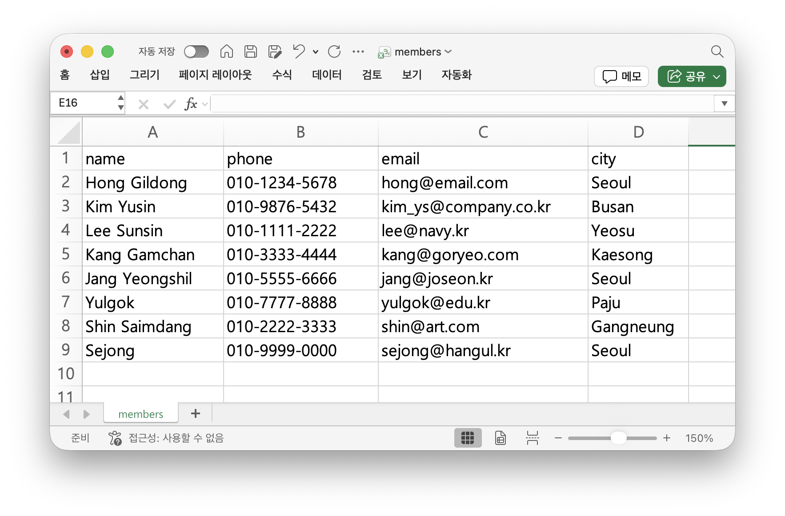
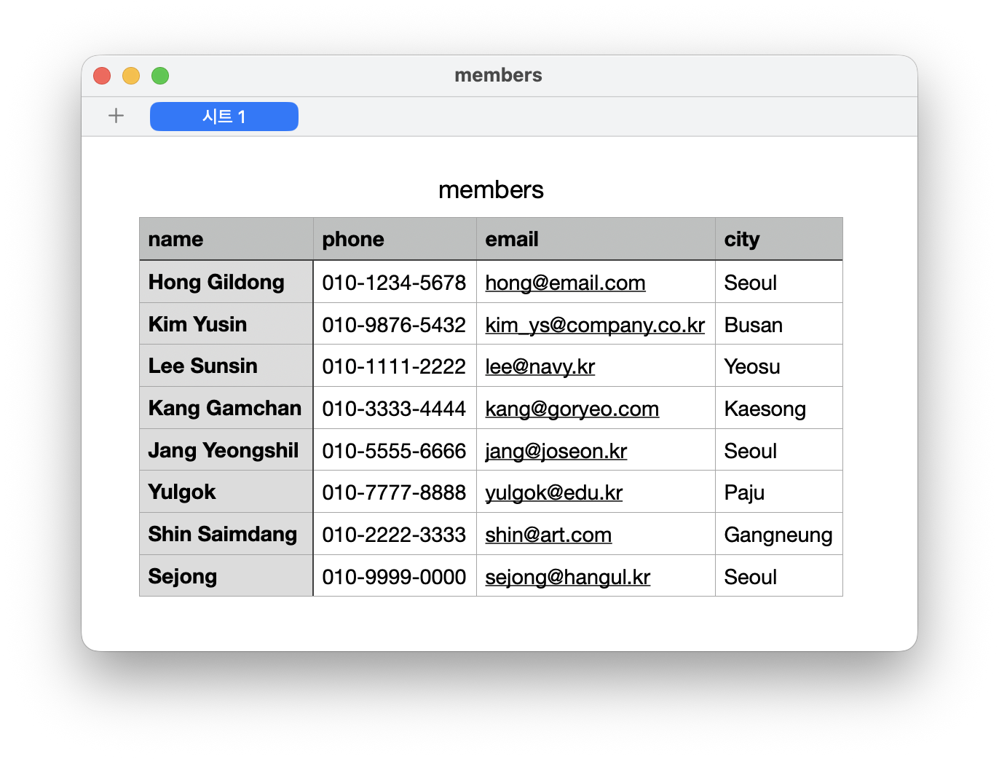
이 프로그램은 "이메일 주소에 @가 포함되어 있다"는 가정을 기준점으로 필드를 분리한다.
이처럼 비정형 데이터를 처리할 때는 데이터의 특성을 먼저 관찰하고, 신뢰할 수 있는 기준점(anchor)을 찾는 것이 중요하다.
더 복잡한 패턴 매칭이 필요하면 파이썬의 re 모듈(정규표현식)을 활용할 수 있다.
10.3 프랙탈 그리기
세 번째 프로젝트로 프랙탈fractal을 그려 보자. 프랙탈이란 전체의 모양이 그 자신의 부분 안에 그대로 다시 들어 있는 도형을 말한다. 나뭇가지가 갈라져 다시 작은 가지로 나뉘는 모양, 해안선이 어느 축척으로 들여다보아도 들쑥날쑥한 모양, 양치식물의 잎 한 장이 잎 전체를 그대로 닮은 모양 등이 모두 프랙탈의 예이다. 이런 도형은 한꺼번에 묘사하기는 매우 어렵지만, "지금 그리는 모양 안에 자기 자신을 한 번 더 그린다"는 재귀recursion의 관점으로 보면 놀라울 만큼 단순한 코드로 표현된다.
자기 닮음과 재귀
4장에서 함수가 자기 자신을 호출하는 재귀를 잠깐 살펴보았다. 재귀의 핵심은 두 가지이다 — (1) 어느 시점에는 더 이상 자신을 부르지 않고 멈추는 종료 조건base case, (2) 작아진 문제로 자기 자신을 부르는 재귀 호출recursive call. 프랙탈은 이 두 요소를 그대로 그림 위에 옮긴 것이다 — "한 가지를 그리고, 그 끝에서 살짝 짧아진 가지를 두 개 그린다. 가지가 충분히 짧아지면 멈춘다." 이 한 문장이 곧 코드이며, 또한 그림이다.
turtle 그래픽
프랙탈을 코드로 옮기려면 화면 위에 선을 그릴 수 있는 도구가 필요하다.
turtleturtle graphics은 파이썬에 기본 내장된 그래픽 라이브러리로 별도 설치가 필요 없다.
이름 그대로 화면 위의 거북이가 펜을 든 채 움직이고, 거북이가 지나간 자리에 선이 그려진다는 단순한 모형으로 동작한다.
이 한 개의 비유 덕분에 학생도 명령 몇 개만 익히면 곧장 그림을 그릴 수 있어, 프로그래밍 입문 교재에서 오랫동안 사랑받아 온 도구이다.
거북이를 다루는 데 자주 쓰는 명령은 다음 표에 정리된 정도이며, 프랙탈을 그리는 데에는 이 정도면 충분하다.
| 명령 | 의미 |
|---|---|
forward(d) / backward(d) | 현재 방향으로 d만큼 앞/뒤로 이동하면서 선을 그린다. |
left(a) / right(a) | 현재 방향에서 a도만큼 좌/우로 회전한다(이동 없음). |
penup() / pendown() | 펜을 들거나 내린다. 들면 이동해도 선이 그려지지 않는다. |
goto(x, y) | 좌표 (x, y)로 직접 이동한다. |
color('saddlebrown') | 펜과 채움 색을 한꺼번에 지정한다. |
speed(0) / hideturtle() | 그리기 속도를 최대로, 거북이 모양을 숨긴다. |
turtle.done() | 창을 닫지 않고 그림이 보이도록 유지한다. |
이 명령들이 어떻게 그림으로 이어지는지 감을 잡기 위해, 정사각형 하나를 그려 보는 짧은 예제부터 살펴보자.
import turtle
t = turtle.Turtle()
t.speed(0)
for _ in range(4):
t.forward(120) # 한 변 그리기
t.left(90) # 90도 회전
turtle.done()forward(120)으로 한 변을 긋고 left(90)으로 90도 회전하는 동작을 네 번 반복하면 정사각형이 완성된다.
이처럼 turtle 프로그래밍은 "전진 — 회전"의 짧은 명령을 반복·중첩하여 점점 복잡한 도형을 만들어 나가는 방식이다.
프랙탈도 결국 이 짧은 명령들이 재귀적으로 호출될 뿐, 새로운 도구는 더 필요하지 않다.
실제로 위 코드를 실행하면 그림 10.4처럼 거북이가 화살표 모양으로 출발 위치에 다시 돌아온 채 정사각형 한 변씩 그려 낸 결과를 확인할 수 있다.
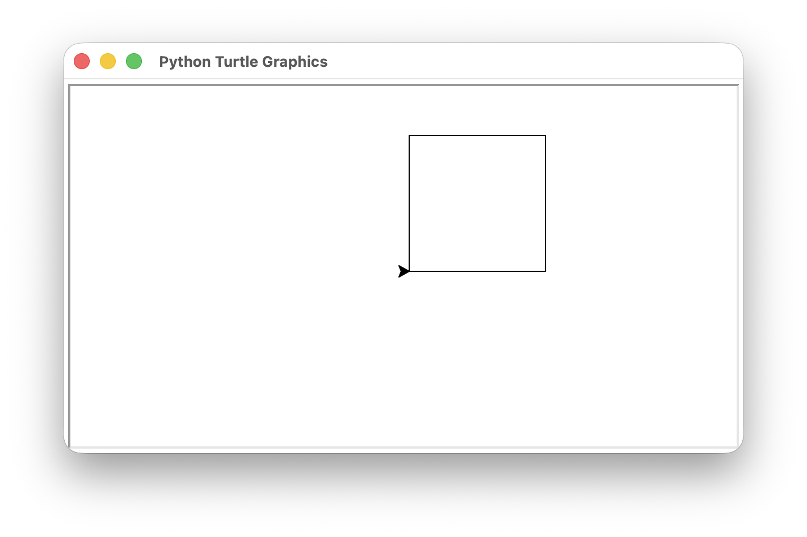
재귀 나무: 가장 단순한 프랙탈
가장 짧고 인상적인 프랙탈은 재귀 나무fractal tree이다.
함수 tree(t, length, depth)는 거북이 t의 현재 위치에서 길이 length짜리 가지 하나를 그린 뒤, 그 끝에서 좌우로 약간 꺾어 자기 자신을 더 짧은 길이와 한 단계 줄어든 깊이로 두 번 부른다.
import turtle
ANGLE = 30 # 가지가 꺾이는 각도(단위: 도)
RATIO = 0.7 # 단계마다 줄어드는 길이 비율
def tree(t, length, depth):
if depth == 0: # 종료 조건
return
t.forward(length) # 현재 가지 그리기
t.left(ANGLE)
tree(t, length * RATIO, depth - 1) # 왼쪽 부분 나무
t.right(2 * ANGLE)
tree(t, length * RATIO, depth - 1) # 오른쪽 부분 나무
t.left(ANGLE)
t.backward(length) # 시작 위치로 복귀
def main():
screen = turtle.Screen()
screen.bgcolor('white')
t = turtle.Turtle()
t.speed(0)
t.hideturtle()
t.color('saddlebrown')
t.left(90) # 위쪽을 향하도록 회전
t.penup()
t.goto(0, -200)
t.pendown()
tree(t, 110, 9)
turtle.done()
if __name__ == '__main__':
main()코드가 25줄 남짓이지만, 실행하면 가지가 9단계까지 갈라진 풍성한 나무가 한 번에 그려진다. 그림자가 차곡차곡 쌓이는 듯한 가지 분포는 자연의 나무와 놀랍도록 닮아 있다.
한 줄씩 따라가 보기
tree() 함수의 동작을 처음부터 되짚어 보자.
depth가 0이면 더 그릴 것이 없으므로 즉시 return한다 — 이것이 종료 조건이다.
그렇지 않으면 거북이는 우선 길이 length만큼 앞으로 가서 현재의 가지를 그린다.
그 다음 왼쪽으로 ANGLE도 회전하여 한 단계 짧아진 왼쪽 부분 나무를 같은 함수로 그린다.
부분 나무를 다 그리고 돌아오면 거북이는 처음 회전한 자세로 복귀해 있으므로, 오른쪽으로 2 * ANGLE만큼 돌리면 정확히 오른쪽 가지의 시작 자세가 된다.
오른쪽 부분 나무까지 마치고 나면 회전을 원상 복구하고 backward(length)로 처음 위치로 돌아온다.
이 "그리고 — 돌아오기" 패턴은 거북이의 상태를 호출 전과 똑같이 만들어 주기 때문에, 호출하는 쪽에서는 자식 호출이 어떤 그림을 그렸는지 신경 쓰지 않아도 된다.
매개변수를 바꿔 보기
프랙탈 코드의 가장 즐거운 점은 상수 두세 개만 바꿔도 전혀 다른 식물이 된다는 것이다.
다음 표는 같은 tree() 함수에 매개변수만 다르게 넘겼을 때의 효과를 정리한 것이다.
| 바꾸는 값 | 예시 | 시각적 효과 |
|---|---|---|
depth | 5 \(\to\) 11 | 가지 개수가 기하급수적으로 늘어 잎이 빼곡해진다. |
ANGLE | 20 \(\to\) 45 | 각도가 작으면 길쭉한 나무, 크면 부채꼴처럼 펼쳐진다. |
RATIO | 0.5 \(\to\) 0.8 | 작으면 가지가 빨리 줄어 키 작은 관목, 크면 흐드러진 큰 나무. |
color | 'forestgreen', 'tomato' | 색만 바꿔도 분위기가 완전히 달라진다. |
depth를 너무 크게 잡으면 그릴 가지의 수가 2depth로 늘어나 그리기 시간이 급격히 길어지므로, 처음에는 8 \(\sim\) 10 정도로 두고 차차 키워 보자.
같은 함수를 호출 직전에 t.pencolor()나 t.pensize()를 바꿔 가지 굵기를 depth에 비례하도록 만들면 더 자연스러운 나무가 된다 — 이는 직접 시도해 볼 좋은 연습거리이다.
한 걸음 더 — 코흐 눈송이
같은 재귀 패턴으로 코흐 눈송이Koch snowflake도 그릴 수 있다. 하나의 직선 구간을 셋으로 나누고 가운데에 정삼각형 산을 세우는 변환을 모든 부분 구간에 재귀적으로 적용하면, 단계가 깊어질수록 눈송이의 가장자리가 점점 들쭉날쭉해진다.
import turtle
def koch(t, length, depth):
if depth == 0:
t.forward(length)
return
length /= 3
koch(t, length, depth - 1); t.left(60)
koch(t, length, depth - 1); t.right(120)
koch(t, length, depth - 1); t.left(60)
koch(t, length, depth - 1)
def main():
screen = turtle.Screen()
screen.bgcolor('midnightblue')
t = turtle.Turtle()
t.speed(0)
t.hideturtle()
t.color('white')
t.penup()
t.goto(-150, 90)
t.pendown()
for _ in range(3): # 눈송이 = 코흐 곡선 3개
koch(t, 300, 4)
t.right(120)
turtle.done()
if __name__ == '__main__':
main()koch() 함수의 본체는 단 네 개의 재귀 호출과 두 번의 회전(left(60), right(120))이 전부이다.
이 짧은 함수가 그 어떤 곡선보다도 복잡한 눈송이의 둘레를 만들어 낸다는 점이 프랙탈의 매력이다.
두 코드를 모두 실행한 결과를 그림 10.5에 모아 두었다 — 한쪽은 자연을 닮은 가지, 한쪽은 결정처럼 정교한 둘레로, 같은 재귀라는 한 가지 도구가 얼마나 다른 모양을 만들어 낼 수 있는지를 한눈에 비교할 수 있다.
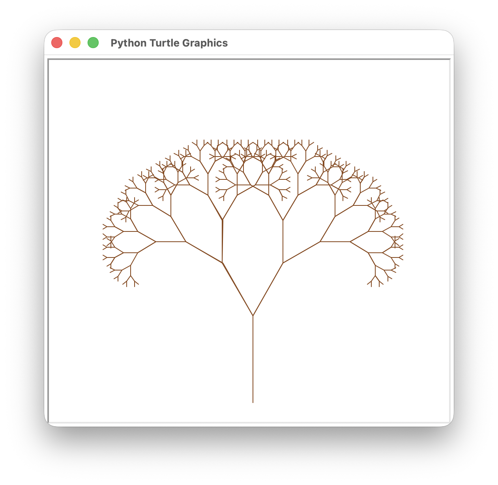
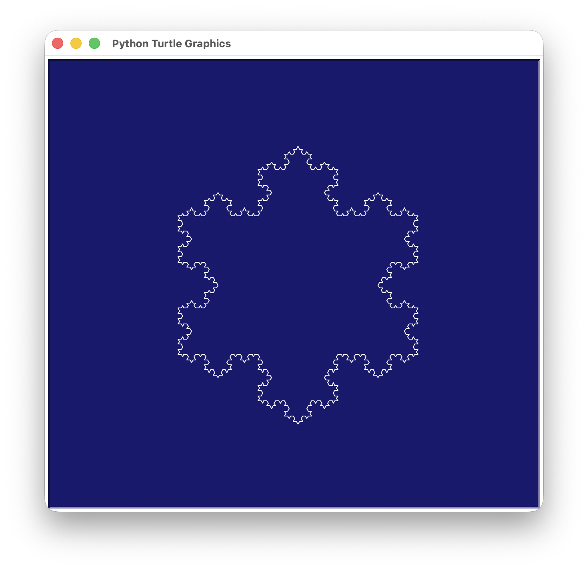
10.4 웹 앱 만들기: Flask
네 번째 프로젝트로 파이썬의 웹 프레임워크인 Flask를 이용하여 간단한 웹 앱을 만들어 보자. 우리가 매일 사용하는 웹 서비스 --- 검색 엔진, 쇼핑몰, 게시판 --- 는 모두 웹 프레임워크 위에서 동작하는 프로그램이다. 파이썬은 웹 개발 분야에서도 널리 활용되고 있으며, Flask는 그중에서 가장 배우기 쉽고 가벼운 웹 프레임워크로 평가받고 있다.
웹의 동작 원리
웹 앱을 만들기 전에, 웹이 어떻게 동작하는지 간단히 이해하고 가자. 웹은 클라이언트(웹 브라우저)와 서버(웹 서버) 사이의 요청과 응답으로 동작한다.
- 사용자가 브라우저에 주소(URL)를 입력하면, 브라우저가 서버에 요청(request)을 보낸다.
- 서버는 요청을 처리하고, HTML 페이지를 응답(response)으로 돌려보낸다.
- 브라우저는 받은 HTML을 화면에 표시한다.
Flask는 이 "서버" 역할을 하는 프로그램을 파이썬으로 쉽게 만들 수 있게 해 준다. 복잡한 설정 없이 몇 줄의 코드만으로 웹 서버를 실행할 수 있다는 점이 Flask의 가장 큰 장점이다.
Flask 설치와 Hello World
Flask는 외부 패키지이므로 pip으로 설치한다.
$ pip install flask
설치가 완료되면 다음 코드로 첫 번째 웹 앱을 만들 수 있다.
from flask import Flask
app = Flask(__name__)
@app.route('/')
def home():
return '<h1>Hello, Flask!</h1><p>My first web app.</p>'
if __name__ == '__main__':
app.run(debug=True)이 코드를 python hello_flask.py로 실행하면 터미널에 다음과 같은 메시지가 나타난다.
* Running on http://127.0.0.1:5000
웹 브라우저에서 http://127.0.0.1:5000에 접속하면 "Hello, Flask!" 메시지가 표시된다.
127.0.0.1은 내 컴퓨터 자신을 가리키는 주소이고, 5000은 Flask가 사용하는 포트 번호이다.
실제로 위 코드를 실행한 터미널 화면과 그 결과를 브라우저로 확인한 모습은 그림 10.6에 나란히 정리되어 있다.
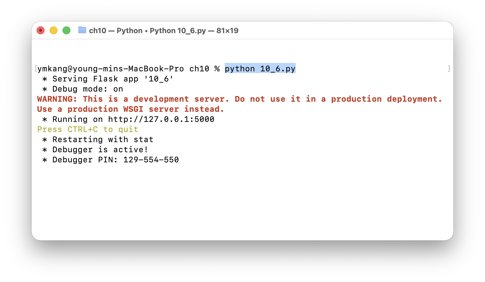
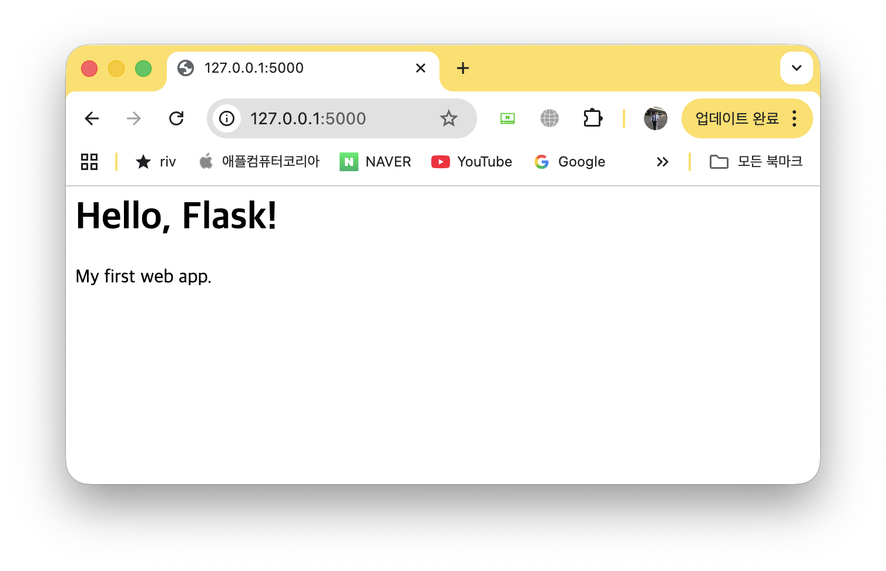
코드의 핵심 요소를 살펴보자.
Flask(__name__)으로 Flask 앱 객체를 생성한다.
@app.route('/')는 데코레이터로, URL 경로 '/'에 접속하면 바로 아래의 함수 home()이 호출되도록 연결한다.
home() 함수가 반환하는 HTML 문자열이 브라우저에 표시된다.
debug=True로 실행하면 코드를 수정할 때마다 서버가 자동으로 재시작되어 개발이 편리하다.
여러 페이지 만들기
@app.route()에 다른 경로를 지정하면 여러 페이지를 만들 수 있다.
@app.route('/')
def home():
return '<h1>Home Page</h1><a href="/about">About</a>'
@app.route('/about')
def about():
return '<h1>About</h1><p>This is a Flask web app.</p>'
@app.route('/greet/<name>')
def greet(name):
return f'<h1>Hello, {name}!</h1>'/greet/<name>처럼 꺽쇠괄호 안에 변수를 넣으면 URL의 일부를 함수의 매개변수로 받을 수 있다.
예를 들어 /greet/Python에 접속하면 "Hello, Python!"이 표시된다.
이처럼 URL에 따라 동적으로 내용이 바뀌는 것이 웹 앱의 핵심이다.
HTML 템플릿 활용
HTML 코드를 파이썬 문자열에 직접 쓰면 코드가 복잡해진다.
Flask는 render_template() 함수를 제공하여 HTML 파일을 별도로 관리할 수 있게 한다.
HTML 템플릿 파일은 프로젝트 폴더 안의 templates/ 폴더에 저장한다.
from flask import Flask, render_template
app = Flask(__name__)
tasks = ['Buy groceries', 'Read Python book', 'Exercise']
@app.route('/')
def home():
return render_template('index.html', tasks=tasks)
if __name__ == '__main__':
app.run(debug=True)render_template('index.html', tasks=tasks)는 templates/index.html 파일을 읽어서 tasks 변수를 전달한다.
템플릿 파일에서는 {{ }}와 {% %}라는 특수 문법(Jinja2 템플릿 엔진)으로 파이썬 변수와 제어문을 사용할 수 있다.
<!-- templates/index.html -->
<!DOCTYPE html>
<html>
<head><title>To-Do List</title></head>
<body>
<h1>To-Do List</h1>
<ul>
{% for task in tasks %}
<li>{{ task }}</li>
{% endfor %}
</ul>
</body>
</html>
{% for task in tasks %}는 파이썬의 for 문과 동일한 역할을 하며, tasks 리스트의 각 항목을 <li> 태그로 반복 출력한다.
{{ task }}는 변수의 값을 HTML에 삽입한다.
render_template()이 호출되었을 때 일어나는 일을 한 줄씩 따라가 보면 다음과 같다.
- 브라우저가
/같은 URL로 서버에 요청을 보낸다. - Flask가 그 경로에 연결된 함수(
home())를 실행하고, 함수 안에서render_template('index.html', tasks=tasks)을 호출한다. - Flask는 프로젝트의
templates/폴더에서index.html을 찾아 읽는다. - Jinja2 엔진이 파일 안의
{{ \dots }}— 변수,{% \dots %}— 제어문을 파이썬에서 넘겨준 값(tasks)으로 치환한다. - 완성된 보통 HTML 문자열이 브라우저로 응답되어 화면에 그려진다.
render_template()을 쓰는 가장 큰 이유이다.실전 예제: 할 일 관리 웹 앱
이제 사용자가 할 일을 추가하고 삭제할 수 있는 완전한 웹 앱을 만들어 보자. 이 예제에서는 HTML 폼(form)을 통해 사용자 입력을 받고, Flask에서 이를 처리하는 방법을 배운다.
from flask import Flask, render_template, request, redirect
app = Flask(__name__)
tasks = []
@app.route('/')
def home():
return render_template('todo.html', tasks=tasks)
@app.route('/add', methods=['POST'])
def add_task():
task = request.form.get('task')
if task:
tasks.append(task)
return redirect('/')
@app.route('/delete/<int:index>')
def delete_task(index):
if 0 <= index < len(tasks):
tasks.pop(index)
return redirect('/')
if __name__ == '__main__':
app.run(debug=True)핵심 요소를 정리하면 다음과 같다.
methods=['POST']는 이 경로가 POST 방식의 요청(폼 제출)만 받도록 지정한다.
request.form.get('task')는 사용자가 폼에 입력한 값을 가져온다.
redirect('/')는 작업 완료 후 홈 페이지로 다시 이동시킨다.
<int:index>는 URL의 값을 정수로 변환하여 매개변수로 전달한다.
아래는 이 앱의 HTML 템플릿이다.
<!-- templates/todo.html -->
<!DOCTYPE html>
<html>
<head><title>To-Do App</title></head>
<body>
<h1>To-Do List ({{ tasks|length }} items)</h1>
<form action="/add" method="post">
<input type="text" name="task" placeholder="Enter a task">
<button type="submit">Add</button>
</form>
<ul>
{% for task in tasks %}
<li>{{ task }}
<a href="/delete/{{ loop.index0 }}">[X]</a>
</li>
{% endfor %}
</ul>
</body>
</html>
<form action="/add" method="post">는 폼 데이터를 /add 경로에 POST 방식으로 전송한다.
{{ tasks|length }}는 Jinja2의 필터 문법으로, 리스트의 길이를 출력한다.
{{ loop.index0 }}는 for 루프의 현재 인덱스(0부터 시작)를 나타낸다.
이 프로그램을 실행하고 브라우저에서 http://127.0.0.1:5000에 접속하면, 할 일을 입력하고 추가하거나 삭제할 수 있는 웹 페이지가 나타난다. 그림 10.7에 실제 실행 화면과 브라우저 접속 모습을 함께 정리하였다.
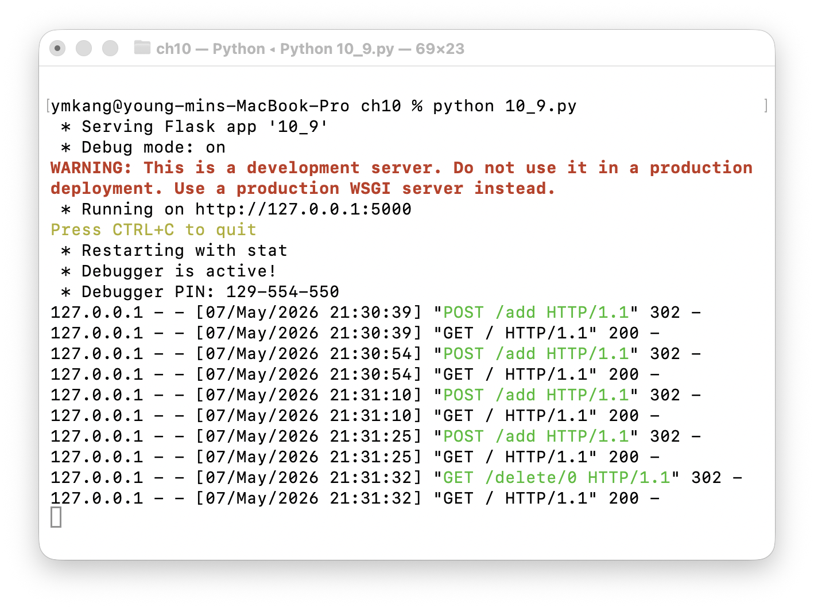
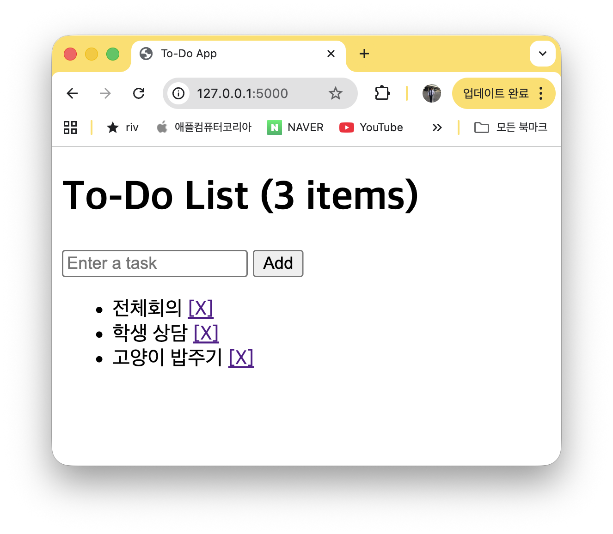
Flask의 app.run(debug=True)는 개발용 서버이다. 실제 서비스를 배포할 때는 Gunicorn이나 uWSGI와 같은 운영(production) 서버를 사용해야 한다.
또한 이 예제에서는 데이터를 리스트에 저장하므로 서버를 재시작하면 데이터가 사라진다. 영구 저장이 필요하면 파일이나 데이터베이스를 연동해야 한다.
- 단어장 앱의
WordApp클래스에 단어 삭제 기능을 추가해 보자.# WordApp 클래스에 다음 메소드 추가 def delete(self): eng = input('Word to delete : ').strip().lower() if eng in self.words: del self.words[eng] print(f' "{eng}" deleted!') else: print(f' "{eng}" not found.') - 본문의 재귀 나무에 깊이별 굵기와 색을 입혀 더 자연스러운 모양을 만들어 보시오.
depth가 클수록 굵은 갈색 줄기, 작아질수록 가는 초록색 잎으로 그려지도록 한다.import turtle def tree(t, length, depth): if depth == 0: return t.pensize(depth) t.pencolor('saddlebrown' if depth > 3 else 'forestgreen') t.forward(length); t.left(25) tree(t, length * 0.7, depth - 1) t.right(50) tree(t, length * 0.7, depth - 1) t.left(25); t.pensize(depth); t.backward(length) t = turtle.Turtle(); t.speed(0); t.hideturtle() t.left(90); t.penup(); t.goto(0, -200); t.pendown() tree(t, 110, 9); turtle.done() - 시에르핀스키 삼각형Sierpinski triangle을 그리는 함수는 정삼각형을 그리고, 각 변의 중점에서 자기 자신을
depth - 1로 다시 호출하면 된다.import turtle def sierpinski(t, length, depth): if depth == 0: for _ in range(3): t.forward(length); t.left(120) return h = length / 2 sierpinski(t, h, depth - 1); t.forward(h) sierpinski(t, h, depth - 1) t.backward(h); t.left(60); t.forward(h); t.right(60) sierpinski(t, h, depth - 1) t.left(60); t.backward(h); t.right(60) t = turtle.Turtle(); t.speed(0); t.hideturtle(); t.color('teal') t.penup(); t.goto(-150, -130); t.pendown() sierpinski(t, 300, 5); turtle.done() - 비정형 데이터 정리 프로젝트에서, 사용자가 입력한 키워드를 포함한 줄만 추출하여 파일로 저장하는 기능을 작성하시오.
def extract_lines(in_file, out_file, keyword): with open(in_file, 'r', encoding='utf-8') as fin, \ open(out_file, 'w', encoding='utf-8') as fout: for line in fin: if keyword in line: fout.write(line) extract_lines('log.txt', 'error_only.txt', 'ERROR') - 학생 점수 정보가 담긴 JSON 문자열을
json.loads()로 파싱하여 일정 점수 이상인 학생만 추려 내고, 결과를 다시json.dumps()로 보기 좋게 출력해 보자. 파일이 아닌 문자열 형태의 JSON을 다룰 때 자주 쓰이는 패턴이다.import json raw = '''[ {"name": "Alice", "score": 92}, {"name": "Bob", "score": 75}, {"name": "Carol", "score": 88} ]''' students = json.loads(raw) # 문자열을 list[dict]로 변환 top = [s for s in students if s['score'] >= 85] print(json.dumps(top, ensure_ascii=False, indent=4))
10장 요약
- 이 장에서는 지금까지 배운 파이썬 지식을 종합하여 실제로 사용할 수 있는 네 가지 프로젝트를 구현하였다. 각 프로젝트는 요구사항 분석, 자료구조 설계, 함수 분리, 통합의 과정을 거쳐 완성하였다.
- 단어장 앱: 딕셔너리로 영어 단어(키)와 한글 뜻(값)을 관리하였다.
json모듈의json.dump()와json.load()로 JSON 파일에 저장하고 불러오기하여 프로그램 종료 후에도 데이터가 유지되도록 하였으며,random.shuffle()로 단어 목록을 무작위로 섞어 퀴즈 기능을 구현하였다. - 비정형 데이터 정리 자동화: 구분자와 형식이 제각각인 텍스트 파일을
replace(),split(),strip(),isdigit()등의 문자열 메소드로 파싱하여 정형 CSV로 변환하였다. 이메일의@기호를 기준점으로 필드를 분리하고, 전화번호에서 숫자만 추출하여 형식을 통일하는 전처리 전략을 실습하였다. - 프랙탈 그리기: 자기 자신을 호출하는 재귀 함수와 파이썬 내장
turtle그래픽 라이브러리만으로 자연을 닮은 나무를 그렸다. 종료 조건과 재귀 호출이라는 두 요소가 어떻게 자기 닮은 도형을 만들어 내는지 확인하고,depth/ANGLE/RATIO같은 매개변수 몇 개를 바꿔 같은 함수가 전혀 다른 모양을 그리는 것을 실험하였다. 같은 재귀 패턴을 코흐 눈송이에 그대로 적용하여 한 가지 아이디어가 다양한 프랙탈로 확장됨을 체험하였다. - 웹 앱: Flask 웹 프레임워크를 사용하여 브라우저에서 동작하는 할 일 관리 앱을 구현하였다.
@app.route()로 URL과 함수를 연결하고,render_template()로 HTML 템플릿에 파이썬 데이터를 전달하며, HTML 폼과request.form으로 사용자 입력을 처리하는 방법을 익혔다. - 웹의 요청-응답 구조를 이해하고, 클라이언트(브라우저)와 서버(Flask) 사이의 데이터 흐름을 실습하였다.
- 각 프로젝트에서 함수 분리(하나의 함수가 하나의 기능만 담당)와 메뉴 기반 반복문 구조를 공통으로 적용하여 구조적이고 유지 보수하기 쉬운 프로그램을 설계하는 방법을 배웠다.
- 네 프로젝트를 통해 딕셔너리·파일 입출력, 문자열 파싱, 재귀와 turtle 그래픽, 웹 프레임워크 활용이라는 파이썬의 다양한 응용 역량을 실습하였으며, 실전 프로그래밍의 설계 과정을 체험하였다.
10장 연습문제
- ★★★ 단어장 앱에 오답 노트 기능을 추가하시오. 퀴즈에서 틀린 단어를 별도의 리스트에 기록하고, 오답 단어만 따로 퀴즈를 출제하는 기능을 구현하시오.
- ★★ 비정형 데이터 정리 프로그램을 확장하여, 전화번호뿐 아니라 이메일 주소의 유효성도 검증하시오.
@기호가 포함되어 있고,@뒤에.이 하나 이상 있는지 확인하여 유효하지 않은 이메일은 경고를 출력하도록 하시오. (힌트:find(),count()메소드 활용) - ★★★ 재귀 나무 프로그램을 확장하여 가지 굵기와 색이 깊이에 따라 변하도록 만드시오.
tree()안에서t.pensize(depth)로 굵기를,depth가 작아질수록'saddlebrown'\(\to\)'forestgreen'으로 색이 바뀌도록if분기로 처리한다. - ★★★ Flask를 이용하여 방명록 웹 앱을 만드시오.
사용자가 이름과 메시지를 입력하면 리스트에 저장되고, 메인 페이지에 모든 방명록 항목이 시간순으로 표시되도록 하시오.
(힌트:
datetime.now().strftime('%Y-%m-%d %H:%M')으로 시간을 기록한다) - ★★★ 이 장에서 배운 개념들을 종합하여 자신만의 미니 앱을 하나 기획하고 구현하시오. (예: 일기장, 할 일 관리, 독서 기록, 운동 기록 등) 메뉴 기반 구조, 파일 저장, 최소 3개 이상의 함수를 포함하도록 하시오.
- ★ 단어장 앱의
search()메소드를 부분 일치 검색 기능으로 확장하시오. 현재는 입력한 단어와 정확히 일치하는 경우에만 찾아 주지만, 사용자가 영어 단어의 일부만 입력해도 해당 문자열이 포함된 모든 단어를 찾아 출력하도록 수정하시오. (힌트:in연산자 활용) - ★★ 비정형 데이터 정리 프로그램을 수정하여 도시별 회원 수를 집계하고 출력하는 기능을 추가하시오.
정리된 데이터에서 도시별로 몇 명이 있는지 딕셔너리로 집계하여 출력하시오.
(힌트:
dict.get()메소드 활용) - ★★ 이 장에서 만든 네 가지 프로젝트에서 사용한 핵심 개념(딕셔너리/JSON, 문자열 파싱/CSV, 재귀/turtle, Flask)을 각각 정리하고, 어떤 상황에서 어떤 자료구조나 기법을 선택해야 하는지 비교 설명하시오.
- ★★
random모듈을 사용하여 영문 대소문자와 숫자를 조합한 8자리 랜덤 비밀번호를 생성하는 함수generate_password(length=8)를 작성하시오. (힌트:string.ascii_letters + string.digits와random.choice()활용) - ★★★ 지정한 폴더 내의 파일들을 확장자별로 분류하여 하위 폴더에 이동시키는 프로그램을 작성하시오.
예를 들어,
.txt파일은text/폴더로,.jpg파일은images/폴더로 이동한다. (힌트:os.listdir(),os.makedirs(),shutil.move()활용) - ★★ 객관식 퀴즈 게임을 작성하시오. 최소 5개의 문제를 딕셔너리로 저장하고, 무작위 순서로 출제하며, 최종 점수를 출력한다. 오답 시 정답도 함께 보여 준다.
- ★★★ 이름과 전화번호를 저장하는 연락처 프로그램을 작성하시오.
메뉴 구성: 1) 연락처 추가, 2) 이름으로 검색, 3) 전체 목록 출력, 4) 연락처 삭제, 5) 종료.
데이터는
contacts.json파일에 JSON 형식으로 저장하시오. (힌트:json.dump(),json.load()활용) - ★
time모듈을 이용하여 간단한 스톱워치 프로그램을 작성하시오. 사용자가 엔터 키를 누르면 타이머가 시작되고, 다시 엔터 키를 누르면 경과 시간을 초 단위로 표시한다. (힌트:time.time()활용) - ★★ 비정형 데이터 정리 프로그램을 확장하여, 입력 파일에 중복된 이름이 있을 경우 경고를 출력하고 첫 번째 항목만 유지하도록 하시오.
(힌트: 이름을 집합(
set)에 저장하여 중복 검사) - ★★★ Flask 할 일 관리 웹 앱에 완료 표시 기능을 추가하시오.
각 할 일 항목 옆에 "완료" 버튼을 추가하고, 완료된 항목은 취소선으로 표시되도록 하시오.
(힌트: 리스트 대신 딕셔너리
{'task': ..., 'done': True/False}를 사용) - ★★ turtle 그래픽을 이용하여 사용자가 입력한 정수 \(n\)에 대해 정\(n\)각형을 그리는 프로그램을 작성하시오.
(힌트: 외각 = \(360 / n\),
t.forward()와t.right()활용)